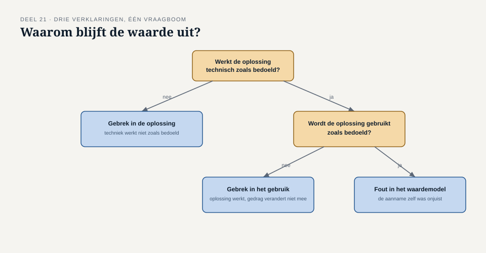

Deel 21 — Oplossingsevaluatie: meten wat er terechtkwam van de bedoeling
Reader · Ductus-cursus Business-analyse · niveau 2 (professional) · deel 21 van 30
21.1 Waar dit deel over gaat
Het uitkomstenblad uit niveau 1, deel 9 legde vooraf vast waaraan je succes en falen zou herkennen. Dit deel gaat over het moment dat die belofte wordt ingelost: een opgeleverde oplossing, enkele maanden in gebruik, daadwerkelijk evalueren tegen wat er beloofd was — en, als er een gat blijkt te zijn, uitzoeken of dat aan de oplossing zelf ligt, aan hoe zij gebruikt wordt, of aan de aanname die aan de belofte zelf ten grondslag lag.
Aan het eind van dit deel kun je:
- gerealiseerde waarde meten tegen de oorspronkelijke belofte uit het uitkomstenblad;
- drie soorten verklaringen voor een waardegat onderscheiden: een gebrek in de oplossing zelf, een gebrek in het gebruik ervan, of een fout in de oorspronkelijke aanname over hoe output tot waarde zou leiden;
- een eerlijke, actuele aanbeveling doen, ook als die ingaat tegen een eerder genomen besluit;
- met het waardemeetblad deze evaluatie systematisch uitvoeren.
21.2 De casus: de drempel van twintig procent
Uit het casusdossier: R-034 (deel 18) activeert automatisch een herberekening van de premie bij een deeltijdwijziging van meer dan 20%.
Drie maanden na livegang vraagt Merel Nour el Idrissi om de cijfers. Het aantal handmatige herberekeningen bij Uitvoering is gedaald, maar minder dan de streefwaarde uit het destijds opgestelde uitkomstenblad voorspelde.
“Hoeveel minder dan verwacht?”
“Ongeveer de helft van de beoogde daling.”
Merel spreekt Karin Dessens, die al sinds deel 15 twijfels had over automatisering zonder toezicht.
“Ik controleer de automatische herberekeningen eigenlijk nog steeds handmatig,” zegt Karin. “Niet omdat het moet, maar ik vertrouw het nog niet helemaal. Na wat er twee jaar geleden misging, wil ik het zeker weten.”
Hier ligt een compleet ander verhaal dan bij WGP 2.0 in niveau 1: de oplossing werkt technisch zoals bedoeld, en toch blijft de beoogde waarde deels uit — niet door een gebrek in de bouw, maar doordat een van de gebruikers, om een begrijpelijke reden, het oude gedrag naast het nieuwe is blijven volhouden.
21.3 Drie soorten verklaringen voor een waardegat
Wanneer gerealiseerde waarde achterblijft bij de belofte uit het uitkomstenblad, is de verleiding groot om meteen naar een oplossing te grijpen. Eerst is echter vaststellen nodig wélk van drie soorten verklaringen van toepassing is — want de vervolgstap verschilt sterk per soort.
Een gebrek in de oplossing zelf. De output doet niet wat hij zou moeten doen: een fout in de beslistabel, een verkeerd ingestelde drempel, een technisch defect. De oplossing hier: het gebrek herstellen, terug naar de betrokken discipline (bouwer, architect).
Een gebrek in het gebruik. De oplossing werkt zoals bedoeld, maar wordt niet, niet volledig, of naast het oude gedrag gebruikt — zoals Karin, die de automatische herberekening blijft controleren. De oplossing hier ligt niet in de techniek, maar in vertrouwen, training, of het wegnemen van de reden waarom het oude gedrag aantrekkelijk blijft.
Een fout in het waardemodel. De aanname die ten grondslag lag aan de belofte — dat minder handmatige herberekeningen automatisch tot de voorziene tijdsbesparing zou leiden — blijkt zelf onjuist of onvolledig geweest, los van hoe goed de oplossing werkt of gebruikt wordt. Misschien was de handmatige herberekening zelf nooit de grootste tijdsvreter, en zit de werkelijke tijdwinst ergens anders.
Waarom dit onderscheid ertoe doet
Deze drie verklaringen vragen fundamenteel verschillende vervolgstappen, en ze worden in de praktijk vaak door elkaar gehaald — meestal wordt te snel naar de eerste verklaring gegrepen (“er zit een bug in”), terwijl de tweede (Karins gedrag) of de derde (een verkeerde aanname) net zo goed, of zelfs waarschijnlijker, aan de orde kunnen zijn. In de casus is de eerste verklaring vrijwel zeker niet van toepassing — de techniek werkt zoals bedoeld — en ligt de verklaring in de tweede categorie, met mogelijk een kleine bijdrage van de derde (was de geschatte tijdsbesparing per herberekening wel realistisch?).

21.4 Terug naar het verliezersprotocol
De casus in dit deel is meer dan een technisch evaluatievraagstuk — het is ook de plek waar de belofte uit deel 15 wordt getoetst. Merel beloofde Karin destijds, via het verliezersprotocol, dat haar zorg over datakwaliteit zou terugkomen in een later document, ook al werd niet voor haar voorkeur gekozen. Karins voortdurende handmatige controle is het bewijs dat die belofte destijds niet voldoende is ingelost: haar zorg is misschien wel genoemd, maar niet weggenomen.
Dit is een belangrijke les voor oplossingsevaluatie in het algemeen: een gebrek in gebruik is zelden alleen een trainingsvraagstuk. Vaak is het een signaal dat een eerder geuite zorg nooit echt is opgelost, ook al is er destijds “rekening mee gehouden” op papier.
21.5 Een eerlijke aanbeveling, ook tegen een eerder besluit in
Oplossingsevaluatie vraagt om dezelfde discipline als het optieblad uit niveau 1, deel 8: een eerlijk oordeel, ook als dat oordeel ingaat tegen een besluit dat je zelf eerder mede hebt genomen. Het is verleidelijk om een tegenvallend resultaat te verdedigen (“het werkt bijna zoals bedoeld”) in plaats van te erkennen dat de belofte niet is waargemaakt.
Een eerlijke aanbeveling na evaluatie doet drie dingen: benoemt het gat zonder het te verkleinen, wijst de meest waarschijnlijke van de drie verklaringen aan met bewijs, en doet een concrete vervolgstap — die net zo goed kan zijn “de oplossing verder versterken” als “het achterliggende waardemodel herzien” of, in het uiterste geval, “deze route verlaten en een andere optie uit het oorspronkelijke optieblad alsnog overwegen”.
21.6 De werkvorm: het waardemeetblad
Het instrument van dit deel is het waardemeetblad: een sjabloon dat de oorspronkelijke belofte uit het uitkomstenblad naast de daadwerkelijke realisatie legt, het gat verklaart, en een eerlijke aanbeveling oplevert.
Het blad
De oorspronkelijke belofte — maatstaf, nulmeting, streefwaarde, afbreekcriterium, overgenomen uit het uitkomstenblad. Gerealiseerde waarde — de huidige meting, met bron. Het gat — het verschil tussen streefwaarde en realisatie. Verklaring — welke van de drie soorten (oplossing, gebruik, waardemodel) is van toepassing, met bewijs. Aanbeveling — concrete vervolgstap.
Het veld dat het verschil maakt
Als dit een compleet nieuwe aanbeveling was, zonder de geschiedenis van het eerdere besluit — zou je hem nu nog steeds doen?
Dit veld is een bewuste correctie op de neiging om een eerder genomen besluit te verdedigen omdat het nu eenmaal genomen is. Door de vraag te stellen alsof je met een schone lei begint, wordt zichtbaar of de huidige aanbeveling standhoudt op eigen kracht, of dat zij alleen overeind blijft omdat terugkomen op het eerdere besluit ongemakkelijk voelt.

Toegepast op de casus
| Veld | Inhoud |
|---|---|
| Oorspronkelijke belofte | Daling handmatige herberekeningen met minstens 50% binnen 12 weken (uitkomstenblad-achtige belofte bij R-034) |
| Gerealiseerde waarde | Daling van ongeveer 25% |
| Het gat | 25 procentpunt onder de streefwaarde |
| Verklaring | Gebrek in gebruik: Karin (en mogelijk andere collega’s) controleren automatische herberekeningen nog steeds handmatig, uit onvoldoende vertrouwen na een eerdere mislukte pilot |
| Aanbeveling | Geen technische aanpassing nodig. In plaats daarvan: een gerichte, tijdelijke steekproefcontrole door Uitvoering zelf ontworpen en gedragen (in plaats van volledige handmatige herhaling), met een vooraf afgesproken moment waarop het vertrouwen wordt geëvalueerd |
| Schone lei-toets | Ja, deze aanbeveling houdt stand — zij lost het werkelijke probleem (vertrouwen, niet techniek) op, in plaats van de oorspronkelijke automatisering overbodig te verklaren |
21.7 Terug naar de casus
Karins volgehouden handmatige controle is geen falen van haar kant, en ook niet primair een technisch probleem. Het is het late, zichtbare bewijs dat een zorg die in deel 15 terecht werd benoemd, nooit volledig is weggenomen — alleen erkend. Het waardemeetblad maakt dat verschil zichtbaar en biedt een aanbeveling die niet de techniek herhaalt, maar het onderliggende vertrouwen adresseert.
Vooruit naar deel 22. Met alle zes kennisgebieden van CCBA nu praktisch doorlopen — BAPM, E&C, RLCM, RADD, SA op praktijkniveau, en nu SE — sluit niveau 2 af met examentraining, een portfolio-oefening, en het BA-urenlogboek.